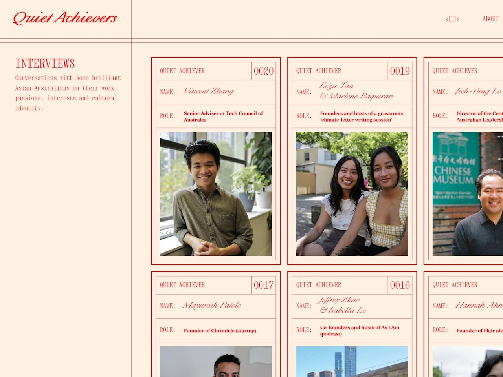

Quiet Achievers
Quiet Achievers is still my favourite project to date. It combines three of my passions: photography, story-telling and human connection. I moved to Melbourne, Australia for 2 months in 2023 to work on this.
Quiet Achievers is a platform that shares and celebrates the authentic stories of a diverse group of Asian-Australians. From politicians to startup founders to artists to climate activists - we explore the complexity in each individual’s relationship with their cultural identity, and look into how that has shaped them as a person, and how they live today.